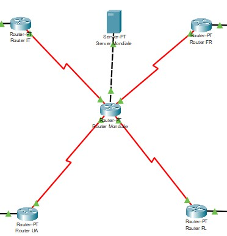

HyperHosting è un sistema di hosting pensato principalmente per il business, ma offre anche la possibilità di essere utilizzato per il gaming in base alle necessità del cliente. Grazie a un servizio innovativo, HyperHosting garantisce grandi capacità di archiviazione e, in caso di crash dei server, consente il recupero dei dati, offrendo così un'esperienza affidabile e sicura.
In questa 1° fase, vediamo la struttura completa dell'architettura di rete. Nelle fasi successive, andremo a vedere poi come sono stati configurati i 4 paesi, e quello che sarà poi il centro del progetto.
Nella 2° fase, vi elencherò quelli che sono stati i vari dispositivi utilizzati nel progetto, per i paesi ho utilizzato rispettivamente 8 computer, 1 switch, 1 server, 1 router mentre per il centro del progetto ho usufruito di 1 router (che faceva da collegamento al router di ogni paese) e 1 server (definito mondiale).
Nella 3° e ultima fase ci siamo dedicati al routing, che aveva il compito di bilanciare il carico di dati per evitare sovraccarichi.